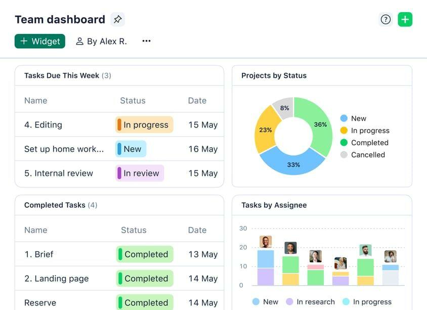
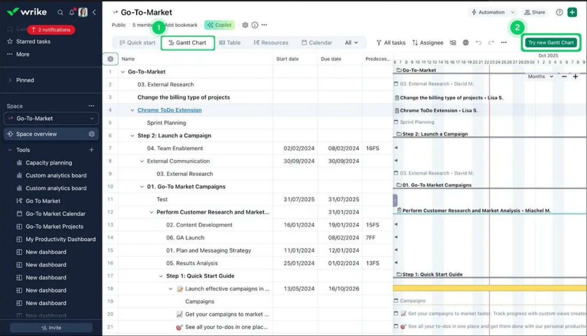
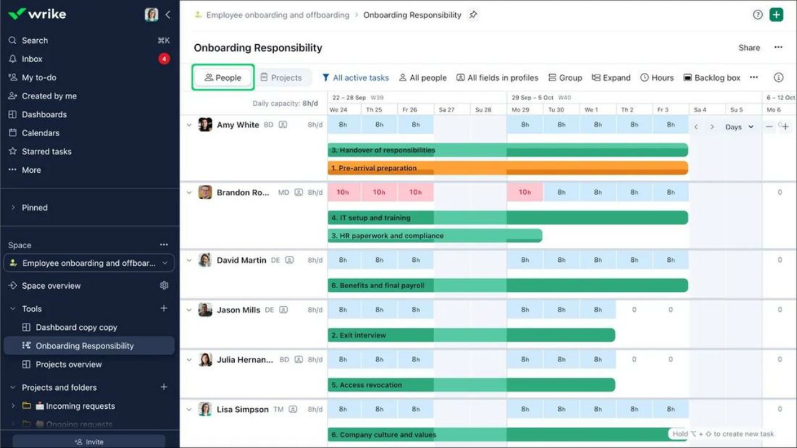

Wrike Review: Deep Scheduling, Heavy Steering
6.0 Sensible Score, out of 10
Ratings by business type
Best suited to: PMOs, marketing operations, agencies and IT teams running many projects at once, especially where proofing and resource planning matter.

Sensible Stack: Streamlining business, whatever your size
The short answer
Wrike is the heavy machinery in this series: the deepest scheduling and resource management here, wrapped in the densest interface. Teams of 15 to 200 juggling many projects will find Gantt depth, workload management, proofing and request forms in one place. Everyone smaller will find a learning curve, seat bundles of five, and a bill that jumps two and a half times between the sensible tier and the one with the features they actually need.
What it is
Wrike is work management for organisations: spaces, folders and projects, with list, board and Gantt views, custom workflows, and a strong sideline in marketing and creative operations, where its proofing and approval tools are the draw. It thinks like a PMO, because it is sold to them.
Where it wins
- Scheduling depth. The Gantt starts on the $10 Team plan with all four dependency types and automatic rescheduling of dependents. Critical path and baselines arrive on Business. Of the Monday and Asana class tools, this is the serious scheduler
- Resource management: workload charts, effort allocation and capacity views that most rivals either gate harder or do not have
- Proofing and approvals for creative and marketing work, plus request forms that turn intake into projects
- Microsoft Project import on Business, for teams migrating off the desktop tool
- Reporting depth. Cross project dashboards and reports are a real strength, the sort of thing that keeps a programme office happy


Where it frustrates
- The UX/UI is not on par with Monday or Asana, and the gap is measurable. G2 ease of use: Asana 8.6, Wrike 7.9; ease of setup 8.6 against 7.8. Reviewers' most cited Wrike trade offs are literally learning curve and not intuitive, and the interface earns descriptions like a maze of menus. One head to head scored ease of use Monday 4.2 out of 5, Wrike 2.6
- Subtask progress does not link up the way a project manager expects. By default, parent and subtask dates are independent, date roll up is a Gantt action rather than a permanent state, and subtask delays can hide from the parent. A progress average can be calculated from subitems, but only on Business and up, switched on field by field, calculated when you look at it rather than stored, and any manual edit at parent level quietly switches it off
- The pricing shape. Seats sell in bundles of five up to 30 users, Business starts at five users and is annual billing only, and the step from Team at $10 to Business at $25 per user is where time tracking, workload and the rest live. Small teams pay for the staircase, not the room they use
- Rollout weight. Enterprise deployments are documented at three to six months. This is a platform you implement, not a tool you try on a Friday
The AI, and its price tag
AI Essentials (writing help and summaries) is included from the Team tier; AI Elite sits on Business with metered actions, plus paid add on packs. Reviewers are lukewarm: one widely read verdict was that the AI felt bolted on, and our duplication warning applies to the writing and summary features if you already pay for a general AI subscription. Wrike's AI is not the reason to buy Wrike; the scheduling is.
Reporting and dashboards
A genuine strength, with the usual Wrike asterisk. The dashboards and cross project reporting are deep and exec presentable, and the analytics will answer questions the Monday class tools cannot. The asterisk is effort: getting them right takes configuration, and the reporting depth mostly unlocks on Business and up.
Pricing
Checked November 2026, after a January 2026 tier restructure. Free plan exists but caps at 200 active tasks. Team $10 per user per month billed yearly, 2 to 15 users. Business $25, 5 to 200 users, annual only. Pinnacle and Apex are quote only. Mind the bundles of five when you count seats.
Verdict
Solid, deep, and a rung below Monday and Asana overall, and below ClickUp and Notion for customisation. Wrike trades ease for depth harder than anything else in this series. If your problem is genuinely complex scheduling across a real team, that trade can be worth it. If it is not, the curve will tax you every day for depth you never use.
Try it: Visit Wrike
Research note: Pricing, seat bundles and roll up behaviour checked against vendor pages, Wrike's own help and community answers, G2 comparisons and published reviews, November 2026. Usage history is the author's own.
Watch: the official video
“What is Wrike: Wrike Demo & Overview”, from the official Wrike YouTube channel.
Wrike and the Wrike logo are trademarks or registered trademarks of Wrike, Inc.